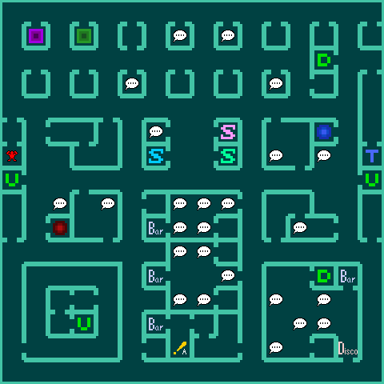
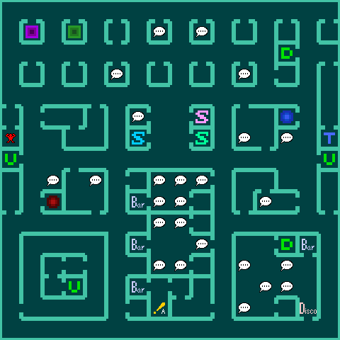

| Law END | Neutral END | Chaos END | All Bosses |
Kichijoji
First dream sequence starts:
- Name Hero ア and put all points in Speedはやさ.
- Name Law Hero カ and put 3 points into Speedはやさ and rest into Magicまりょく.
- Name Chaos Hero サ and put all points into Magicまりょく.
Mash B to leave the house (1) then head to the Arcade (3) and go to (B) to get attacked by Haunt Preta.
Return home and go to bed (Up x2 - Sleepすいみんを とる.
Second dream sequence:
- Mash A to say yes.
- Name Heroine イ and put 4 points into Speedはやさ and rest into Strengthつよさ.
Inokashira Park
Go to Inokashira Park (4) and watch the cutscene. Buy 3x Hamayaはまや at KAIFUKU and get the 400 MAG chest (1).
Return home to get arrested.
Hospital
Recruit Law Hero (A) and go talk to STEVEN (B) (Yes → No).
Head upstairs to fight Fallen Orias(C):
- Hero defends and Law Hero uses Hamayaはまや.
- Hero levels Intelligenceちえ and Law Hero levels Speedはやさ.
Leave the hospital and go to the Arcade again.
Once in the Arcade recruit Chaos Hero (A) and enter SURVIVAL:
- Sellうる: Total 32580¥
- Attack Knifeアタックナイフ
- Machetteマチェット
- Beretta 92Fベレッタ９２Ｆ
- Spike Rodスパイクロッド
- MPS Machine GunＭＰＳマシンガン
- Combat Bootsコンバットブツ
- Rebetta KnuckleレベットナックルRebetta Knuckle
- Buyかう
- Head Gearヘッドギア
- Survival Vestサバイバーベスト
- Equipそうび
- Chaos Hero - Head Gearヘッドギア and Survival Vestサバイバーベスト
- Hero - Cerbera Vestケルブラーベストand Full Helmフルヘルム
Go home and fight Jaki Ama no Sakugami:
- Chaos Hero uses Hamayaはまや.
- Hero levels Intelligenceちえ, Law Hero levels Magicまりょく, and Chaos Hero levels Magicまりょく.
Go to Inokashira Park and buy 7x Hamayaはまや and head to Echo Building.
Echo Building
From now on it's possible to recruit the demons needed but it's not necessary to force a recruit here, as all the demons available here are also present in the next few areas.
Take the elevator to 4F and get money (chest 3) then head upstairs and and go fight Douman:
- Hero defends and the others use Hamayaはまや.
- Chaos Hero uses Patraパトラ to cure BIND.
- Heal Chaos Hero or Law Hero with Diaディア) if needed.
- Hero levels up Intelligenceちえ, Law hero levels up Speedはやさ, and Chaos Hero levels up Magicまりょく.
Enter the Terminal room and transferてんそう to Shinjuku Lab.
Shinjuku
You may choose to saveきろく at the terminals as failing to escape a group of Harpies can kill one or all party members.
Events (A) and (B) are fixed Jaki Orc encounters in which Chaos Hero uses Agiアギ and the others defend.
Underground Mall
After leaving the Lab, head to the Underground Mall. The exp from just fixed fights is not enough to level Chaos Hero to 13 by the time recruits could be over, so fighting an encounter is required: Haunt Oshichi dies to Zanザン, Night Imp and Jaki Orc die to Agiアギ.
 

This is where most recruits can be done with the exception of Fairy Dryad, but it's also not the last place these demons can be found. Make sure to talk away encounters with demons already recruited as they may give money, magnetite, and Life Stonesませき that can be used for negotiations.
Head to the southernmost bar and talk to the barman: refuse drinks → agree to talk to him → yes → no → yes. Head downstairs on the northeastern set of stairs.
Talk to the Heroine (B) and go back upstairs to meet the Resistance Man (A) and head out to the western exit.
For safety, go to the Messian Church and buy 3x Holy Waterせいすい.
Tokyo Metropolitan Government
From the Underground Mall head south for the public execution.
Enter the building and fight the hordes (A):
- Undead Zombie Copシキ ゾンビコップ - Chaos Hero uses Maragiマハラギ
- Undead Zombie Armyシキ ゾンビアーミー - Chaos Hero uses Maragiマハラギ. Law Hero can use Hamayaはまや for safety.
- Undead Zombie Armyシキ ゾンビアーミー and Spirit Lemuresアクリョウ レムルース - Law Hero uses Hamayaはまや on the left and Chaos Hero uses Maragiマハラギ on the right.
- Spirit Lemuresアクリョウ レムルース and Haunt Ghoulユウキ グール - Law Hero uses Hamayaはまや on the left and Chaos Hero uses Maragiマハラギ on the right.
- Level Intelligenceちえ for Hero and Magicまりょく for Law and Chaos Hero.
Hero should hit Level 12, so every recruit is possible from now on. Go out and head north to Ozawa's Hideout.
Get the 1360MAG chest (1) and go fight Haunt Baykok (A):
- Law Hero uses Holy Waterせいすい, Chaos Hero uses Agilaoアギラオ
- Level Magicまりょく for everyone.
Fairy Goblin and Fairy Pyro Jack are available in this dungeon and ideally should have already been recruited. Fairy Dryad and Night Imp can also be found here.
If recruits are over or when leaving the building, use Estomaエストマ´ with Chaos Hero (Lv 13). Go back to Shinjuku Underground Mall (3).
American Embassy
Go south to the Embassy.
Talk to Thor. If you got a Cu Sith, Traestoトラエスト out.
Ichigaya Garrison
Use Estomaエストマ. Have the Heroine join your party (A) and head into the Armour Shop to sell the MP5 Machine GunMP5マチンガン - 12500. Head into the Messiah and buy 2x Holy Waterせいすい and Charmsチャーム until you have 5k left. Then leave through the eastern exit to go to the Ichigaya Garrison.
Once you enter the building, take the elevator to B1F, and take the elevator to 3F. Talk to Gotou and leave the building for the American Embassy. Make sure Brute Azumi and Night Imp/Night Gamin are recruited before leaving.
Talk to Gotou. Then summon:
- Pyro Jackジャックランタン
- Azumiアズミ
- Goblinゴブリン
- Heroine
Head back inside and say No. Fight:
Return your demons and leave. If you have Cu Sith, Traestoトラエスト out but return it when outside.
American Embassy
Go south to the Embassy.
Before fighting Thor, recruit Fairy Dryad if you haven't back in Ozawa's Hideout and Beast Cu Sith.
Go upstairs and before talking to Thorman (B) summonナカマを よびだす your demons:
- Pyro Jackジャックランタン
- Goblinゴブリン
- Heroine
If needed, reorderいちがえを する party.
Talk to Thorman (No) and fight Deity Thor:
- First turn: Agilaoアギラオ, Makakajaマカカジャ, Charmチャーム, Sword
- Second turn: Agilaoアギラオ, Tarukajaタルカジャ, Defend, Sword
- AUTO. If Thor's Charm wears out, stop AUTO (Hold B) and use another Charm.
- Hero levels Intelligenceちえ and Heroine levels Vitalityたいりょく.
Get chests (5), (6), and (3). Getting (3) before the fight is a safety option.
Use Magic Incenseまりょくのこう on Heroine.
Kongo Shinkai
After the ICBM, the Hero wakes up in Kongou Shinkai with no party members or demons in his COMP.
Quickly go to Chaos Hero (E) and cast Estomaエストマ, go to Law Hero (D) and then go back to En-no-Ozuno (A) getting the previously recruited demons (I) on your way. En-no-Ozuno will ask for some Somaソーマ twice, before returning to him with Soma the second time a safety save can be considered (B).
Summonナカマを よびだす demons into the formation:
- Azumiアズミ
- Goblinゴブリン
- Hero
- Pyro Jackジャックランタン
Fight the Blue Phantom (H).
Fight the Red Phantom (G):
Summonナカマを よびだす demons into the formation:
- Azumiアズミ
- Goblinゴブリン
- Hero
- Pyro Jackジャックランタン
Fight Red Phantom:
Go back to En-no-Ozuno (A) and, if needed, heal with Goki (C). Then leave for the exit (J) and fight Zenki and Goki:
- Zioジオ - Goki; Makakajaマカカジャ; Charmチャーム - Zenki; Agilaoアギラオ - Goki; Agilaoアギラオ - Goki; Zanmaザンマ - Goki
- Hero levels Intelligenceちえ.
- Law Hero levels Magicまりょく to max and the rest goes to Speedはやさ
- Chaos Hero levels Magicまりょく to max and the rest goes to Intelligenceちえ
Tokyo - Ozawa
After leaving Kongou Shinkai, give the man some money - but he'll complain it isn't worth anything anymore. Go north to Shinjuku.
Trade the Emeraldエメラルド for a Core Shieldコアシルド at the Rugs Shop.
Bookmark the Shinjuku Terminal. Go to the junk shop.
- Sell .
- Guillotine Axeギロチンアクス
- Kodachi of Lightひかりのこだち
- The Other Swordみかつきのたち
- Buyかう.
- Hinrayaヒンラヤ
- Gold Pillきんだん
Head to the first bar to receive some ₹ from the old man (A), then go to the Disco basement to receive some info (B). Finally head to 2F to meet Ozawa (C). Go back downstairs and let Chaos Hero fuse with a demon at the JAKYOU. If available, he will pick a Chaos aligned demon to fuse, which is the reason for having recruited Imp. Go to KAIFUKU and heal Goblinゴブリン for alignment adjustment. Return to Ozawa's Office.
Formation:
- Azumiアズミ
- Goblinゴブリン
- Hero
- Pyro Jackジャックランタン
- Law Hero
- Chaos Hero
Fight Kishin Take-Minakata:
- Zioジオ; Makakajaマカカジャ; Charmチャーム; Agilaoアギラオ; Agilaoアギラオ ;Zanmaザンマ
- Hero - Speedはやさ, Law Hero - Vitalityたいりょく
- Chaos Hero usually doesn't level up so watch out for the dialogue after the fight if you're mashing
- Dialogue after the fight: No → Yes
Traestoトラエスト to leave the building.
Shibuya
Once outside, returnナカマを もどす Pyro Jackジャックランタン and Azumiアズミ, summonナカマを よびだす Cu Sithカーシー. Head south to Shibuya.
Escape from any encounter using Law Hero's Trafuriトラフリ.
Save for safety. Grind Hero to level 28 using Law Hero's Zanmaザンマ and Mazanmaマザンマ.
Go to the Heretic Mansion to fuse Megami Kushinada-Hime:
- Pyro Jackジャックランタン
- Dryadドリアード
- Azumiアズミ
Go see the Heroine. Afterwards, Traestoトラエスト and re-enter. Buyかう 8x Tamagaeriたまがえり and 1x Hamayaはまや. Transfer to Shinjuku.
After transferingてんそう to Shinjuku, head downstairs and fight Jaki Wendigo to be able to meet Psycho Diver:
summonナカマを よびだす demons
- Kushinada-Himeクシナダヒメ
- Goblinゴブリン
- Hero
- Law Hero
- Cu Sithカーシー
- Turns: Defend, Tarukajaタルカジャ, Defend, Zanmaザンマ), Attack
Talk to Psycho Diver at the same place you met the Heroine before the ICBM, and head back to the terminal. Transferてんそう to Shibuyaシブヤ. Go back to the Heroine to enter her spiritual world.
Go to (D) to fight Femme Arachne:
- First turn: Defend, Makakajaマカカジャ, Charmチャーム, Defend, Defend
- Others: Defend, Makakajaマカカジャ, Defend, Zanmaザンマ, Defend, Defend
- If Charm wears out, use another.
- Hero and Law Hero level Vitalityたいりょく
Cast Traestoトラエスト.
Roppongi
Talk to Alice and head downstairs.
Once in B1F, use the Core Shieldコアシールド. Get the Jar (6) and take the elevator to 3F.
Make Alice (C) cry by saying No -> No and say Yes to Yuriko. Go back to B1F to fight Fallen Nebiros:
reorderいちがえを する:
- Kushinada-Himeクシナダヒメ
- Goblinゴブリン
- Hero
- Cu Sithカーシー
- Heroine
- Makatoraマカトラ to Cu Sith, Tarukajaタルカジャ, Charmチャーム, Defend, Sword.
- Makatoraマカトラ to Goblin, Tarukajaタルカジャ, Defend, Defend, Sword.
- Safe strat: return Goblin and Cu Sith after the buffs
- AUTO. Use another Charm if it wears out.
Use Traestoトラエスト and head northeast to Ginza Underpass.
Ueno
Make your way through Ginza Underpass.
Once in Ginza, save at the terminal.Turn around and head back through the west exit.
Leave and re-enter the building. Cast Traestoトラエスト which will put you the overworld cursor on top of the building, allowing you to bypass the Ikebukuro event. Head to Bishamonten's Lair.
Enter Ueno (25) through the lower exit.
Head to the Junk shop and buy 6x Hikoubariひこうばり.
- First turn: Tamagaeriたまがえり
- Second turn: Tamagaeriたまがえり + Holy Waterせいすい
- Third turn: Tamagaeriたまがえり + Tamagaeriたまがえり
Bookmark the terminal then head to Ladon.
Fight Drake Ladon.
- First turn: Return, Tarukajaタルカジャ , Charmチャーム, Return, Sword
- 3+ Turns: Tarukajaタルカジャ , Defend, Sword
- Follow-up turn: Return, Defend, Sword
- Rest: AUTO. Stop AUTO and use Charmチャーム if it wears out. Heal whenever necessary.
- Assign Vitalityたいりょく for Hero and Magicまりょく for Heroine.
Re-summon Kushinada-Hime and Cu Sith, same formation. Cast Traestoトラエスト. Head through Jikoukuten's Lair and then south to TDL.
Enter T.D.L.
The next three floors have several warps which send you to the next floor, cycling back and forth: 2F → 3F → 4F → 3F.
Meet Vile Echidna: No → Yes
Use Traportトラポート.
Ginza
Head outside. Stop by the Messian Church and buy 4x Segakimaiせがきまい and 6x Charmチャーム.
Enter the lower building at any Moon, except New Moon - left chest. Enter the upper building at 2/8 Moon - left chest. Then re-enter Ginza, equip Lotus Wandロタスウアンド and Traportトラポート.
Head to the Devil Summoner. Tell him: No -> Yes.
- First turn: Tamagaeriたまがえり + Sword
- Second turn: Tamagaeriたまがえり + Sword
- Third: Hikoubariひこうばり, Mazioマジオ
Shinagawa
Make your way through the Underpass and go south to Shinagawa.
Heal at the Messiah and buy more charms if necessary. Head into the Armour Shop.
- Sellうる
- Magician's Maskまどうのマスク
- Buyかう
- Dragon Helmドラゴンヘルム
- Dragon Mailドラゴンメイル
- Dragon Punilドラゴンプニル
- Dragon Bootsドラゴンブーツ
- Crimson Helmくれないのかぶと
- Crimson Mailくれないのよろ
- Crimson Gloveくれないのこて
- Crimson Armorくれないのぐそく
- Equipそうび
- Hero - Dragon Helmドラゴンヘルム, Dragon Mailドラゴンメイル,Dragon Punilドラゴンプニル , Dragon Bootsドラゴンブーツ
- Heroine - Crimson Helmくれないのかぶと, Crimson Mailくれないのよろ, Crimson Gloveくれないのこて , Crimson Armorくれないのぐそく
Talk to Haniel. Say No.
- 2 turns: Defend, Tarukajaタルカジャ, Charmチャーム, Defend, Sword.
- AUTO. Use another Charm if necessary or heal.
- Assign points to Vitalityたいりょく.
Go up to the 4F and fight the Devil Summoner in 4F:
- First fight: Defend, Makakajaマカカジャ, Hamayaはまや, Diaramaデｲアラマ, Defend
- Second fight: Tamagaeriたまがえり, Sword
- Third fight: Tamagaeriたまがえり, Mazioマジオ
Use Traestoトラエスト. Walk into Komukuten's Lair.
- Hero - Holy Waterせいすい
- Both points into Vitalityたいりょく
Use Traportトラポート and transfer to Ueno. Leave.
Head to the left mansion.
Fight Bishamonten.
- Hero - Holy Waterせいすい
- Both points into Vitalityたいりょく
Use Traestoトラエスト and grab the Magician's Maskまどうのマスク from the reward house at FULL Moon. Then head to the right mansion
Walk into Jikoukuten's room.
- Hero - Holy Waterせいすい
- Both points into Vitalityたいりょく
Use Traportトラポート and go to Ginza.
Head to the Weapon store.
- Sellうる
- Magician's Maskまどうのマスク
- Any weapon drops.
- Buyかう
- Pauza P50パウザＰ５０ - 28,000
- SPAS-12SPAS-12 - 10,000
Go to the terminal and transfer to Shibuya.
Go to the healer and buy 3x Tamagaeriたまがえり.
Walk into Zouchouten's room.
- Hero - Holy Waterせいすい
- Both points into Vitalityたいりょく
Use Traportトラポート and go to T.D.L.
Tokyo Destiny Land
Save. Enter the Gaia and buy 3x Amuletアムレット and 2x Pentagramペンタグラム.
Go to the Weapon store.
- Buyかう
- 2x Flash Bulletsせんこうだん - 10,000
- Equipそうび
- Hero - Pauza P50パウザＰ５０, Flash Bulletsせんこうだん
- Heroine - SPAS-12SPAS-12, Flash Bulletsせんこうだん
Head upstairs to meet echidna.
The next three floors have several warps which send you to the next floor, cycling back and forth: 2F → 3F → 4F → 3F.
Return demons and fight the Devil Summoner in 3F:
- First fight: Tamagaeriたまがえり + Tamagaeriたまがえり
- Second fight: Hikoubariひこうばり + Hikoubariひこうばり
- Third fight: Hikoubariひこうばり + Hikoubariひこうばり
Meet Vile Echidna:No. Fight Echidna.
- 1 turns: Return, Tarukajaタルカジャ, Charmチャーム, Gun.
- Other turns: Tarukajaタルカジャ, Gun, Sword.
- AUTO. Use another Charm if necessary or heal.
- Assign points to Vitalityたいりょく.
Use Traportトラポート. Head out.
Bosses
Leave Ginza and head to the police headquarters.
Fight the Defense Machine in 5F (A).
- AUTO (Gun + Sword)
Then head back to the elevator and go to 1F to leave.
Walk to Tokyo Tower.
- AUTO (Gun + Sword)
Traportトラポート back to Ginza
Head to Ikebukuro.
Say No to Yama.
Use estoma, head downstairs and fight Nioh (C).
- Charm + Sword
- AUTO (Gun + Sword)
Head to 2F and fight Yama
- Gun + Gun until he gets bound
- When he's bound, Gun + Sword
Traportトラポート back to Ginza and head through the Passage to the Cathedral.
Tokyo Building
Head into the Cathedral and talk to Law Hero. Then head to the Chaos side
Get the Octopus and head outside.
Swim to the Tokyo Government Building. Head inside and cast Traportトラポート. Go back to B1F and talk to Law Hero and Chaos Hero again, then cast Traestoトラエスト and head inside.
Head through the left elevator first.
Return all demons. Fight Deity Vishnu.
- AUTO. Stop to heal if necessary.
Re-summon Kushinada. Traestoトラエスト and head through the right elevator.
Return all demons. Fight Deity Ravana and Deity Indrajit.
- AUTO. Stop to heal if necessary.
Traportトラポート.
Lower Cathedral
Head back and talk to Law Hero and Chaos Hero. You can now enter the Heart of the Cathedral.
Fight Surt(A).
- Return Kushinada
- AUTO
Fight Astoroth.
- AUTO. Watch out for Charm
Fight Arioch
- Gun + Gun until it's bound
- Summon Goblin and cast two tarukaja.Then return it.
- AUTO
Get poisoned in B5F. Use an Amuletアムレット in B6F. You can grab a back-up Somaソーマ in B7F.
Fight Chaos Hero and Lilith.
- GUN with Hero and SWORD with Heroine.
- AUTO. Stop to heal if necessary.
Finally, at B8F fight Tenma Lord Asura.
- AUTO until Bind
- Summonナカマを よびだす Goblinゴブリン
- Goblin uses Tarukajaタルカジャ until he runs out of MP
- AUTO
- Keep HP above 200 with Diarahanディアラハン
Revive Goblin and heal him up completely. Cast Traportトラポート and go outside.
Fight Beelzebub.
- Gun + Gun til bound
- Gun + Sword
Upper Cathedral
Back at the Cathedral, make your way to 8F. Use Amuletアムレット in 6F.
Fight Uriel.
- GUN with Hero and SWORD with Heroine.
- AUTO. Stop to heal if necessary.
Fight Gabriel.
- Gun, Gun
- Get Goblin out for some Tarukajas.
If Goblin dies, revive
Fight Raphael.
- GUN with Hero and SWORD with Heroine.
- AUTO. Stop to heal if necessary.
- Watch out for Freeze and Paralysis.
In 7F there is another Somaソーマ (18) you can get for safety. Fight Law Hero (D):
- AUTO
- Use Somaソーマ to cure CHARM if needed.
- Kushinada-Hime dying is ok.
- AUTO until Bind
- Summonナカマを よびだす) Goblinゴブリン
- Goblin uses Tarukajaタルカジャ until he runs out of MP
- AUTO
- Keep HP above 250 with Diarahanディアラハン
Fight Seraph Michael.
Walk forward to finish the game